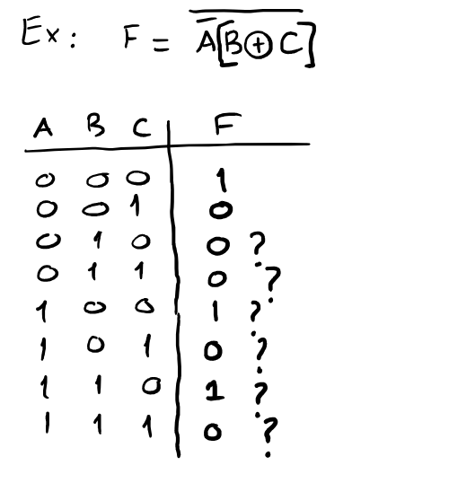

1Bit nedir, bilgisayar neden 0 ve 1 kullanır?
Bir lamba anahtarı düşün. Ya açıktır ya kapalı, ortası yok. Bilgisayarın içindeki milyarlarca minik elektronik anahtar (transistör) da böyle çalışır.
Kapalı anahtara 0, açık anahtara 1 deriz. Tek bir anahtarın taşıdığı bu bilgiye bit denir (binary digit, ikili rakam). Bilgisayar 0 ve 1 kullanır, çünkü iki durumu (elektrik var / yok) ayırt etmek çok kolay ve hatasızdır. On farklı voltaj seviyesini ayırt etmeye çalışmak çok daha zor olurdu.
Tek bit sadece iki şey söyleyebilir. Ama bitleri yan yana koyunca durum sayısı katlanarak artar:
| Bit sayısı | Yazılabilecek desenler | Farklı değer sayısı |
|---|---|---|
| 1 bit | 0, 1 | 2 |
| 2 bit | 00, 01, 10, 11 | 4 |
| 3 bit | 000, 001, …, 111 | 8 |
| 4 bit (nibble) | 0000 … 1111 | 16 |
| 8 bit (byte) | 00000000 … 11111111 | 256 |
| n bit | 2n |
Her yeni bit, durum sayısını ikiye katlar. Bu yüzden n bit ile 2n farklı değer yazılır. İşaretsiz (sadece sıfır ve pozitif, eksi işareti olmayan) bir sayı için bu değerler 0'dan 2n − 1'e kadardır. Örneğin 4 bit ile 0–15, 8 bit ile 0–255.
Sınavda sürekli lazım olacak: 2⁰=1, 2¹=2, 2²=4, 2³=8, 2⁴=16, 2⁵=32, 2⁶=64, 2⁷=128, 2⁸=256, 2⁹=512, 2¹⁰=1024. Kesirler için: 2⁻¹=0.5, 2⁻²=0.25, 2⁻³=0.125, 2⁻⁴=0.0625.
Ana sayfada 8 anahtarlı bir oyuncak var. Anahtarları açıp kapatarak bir baytın hangi sayıya karşılık geldiğini canlı görebilirsin.
2Basamak değeri ve taban
İkili sayıları anlamanın sırrı, zaten bildiğin onluk sistemi yeniden düşünmekte.
Onluk sistemde aslında ne yapıyoruz?
352 yazdığında aslında şunu söylüyorsun: 3 tane yüz, 5 tane on, 2 tane bir. Her basamağın bir ağırlığı (weight) var ve ağırlıklar sağdan sola 10'un kuvvetleri olarak büyüyor:
Buradaki 10 sayısına taban (base ya da radix) denir. Onluk sistemde 10 farklı rakam (0–9) vardır. Rakamlar bitince bir sola "elde" verip tekrar 0'dan başlarız. Arabanın kilometre sayacı gibi: 09'dan sonra 10 gelir.
Aynı fikir, başka tabanlar
Tabanı r olan bir sistemde r tane rakam vardır (0'dan r − 1'e kadar) ve basamak ağırlıkları r'nin kuvvetleridir. Bu yapıya konumsal sayı sistemi (positional number system) denir.
| Sistem | Taban | Rakamlar | Basamak ağırlıkları (sağdan sola) |
|---|---|---|---|
| İkili (binary) | 2 | 0 1 | 1, 2, 4, 8, 16 … |
| Sekizli (octal) | 8 | 0–7 | 1, 8, 64, 512 … |
| Onluk (decimal) | 10 | 0–9 | 1, 10, 100, 1000 … |
| Onaltılı (hexadecimal) | 16 | 0–9, A–F | 1, 16, 256, 4096 … |
Onaltılı sistemde 10 rakamımız yetmez, o yüzden harf kullanırız: A=10, B=11, C=12, D=13, E=14, F=15.
Hangi tabanda yazdığımızı karıştırmamak için sayının sağ altına tabanı yazarız: (101)2 ile (101)10 çok farklı sayılardır. İlki beş, ikincisi yüz bir.
İkili sistemde sayma
Sadece 0 ve 1 olduğu için "elde" çok çabuk oluşur. Kilometre sayacının sadece 0 ve 1 rakamı olduğunu düşün:
| Onluk | İkili | Sekizli | Onaltılı |
|---|---|---|---|
| 0 | 0000 | 0 | 0 |
| 1 | 0001 | 1 | 1 |
| 2 | 0010 | 2 | 2 |
| 3 | 0011 | 3 | 3 |
| 4 | 0100 | 4 | 4 |
| 5 | 0101 | 5 | 5 |
| 6 | 0110 | 6 | 6 |
| 7 | 0111 | 7 | 7 |
| Onluk | İkili | Sekizli | Onaltılı |
|---|---|---|---|
| 8 | 1000 | 10 | 8 |
| 9 | 1001 | 11 | 9 |
| 10 | 1010 | 12 | A |
| 11 | 1011 | 13 | B |
| 12 | 1100 | 14 | C |
| 13 | 1101 | 15 | D |
| 14 | 1110 | 16 | E |
| 15 | 1111 | 17 | F |
Bu tabloya iyi bak. En sağdaki bit her satırda değişiyor (0,1,0,1…), bir solundaki ikişer ikişer, sonraki dörder dörder, en soldaki sekizer sekizer. Bu deseni doğruluk tablosu kurarken tekrar kullanacağız.
Bu 0–15 tablosunu (ikili ve onaltılı) ezbere bilmek, sınavdaki dönüşüm sorularını yarı yarıya hızlandırır.
Kesirli sayılar
Virgülün (noktanın) sağında ağırlıklar küçülmeye devam eder: onlukta 10⁻¹ = 0.1, 10⁻² = 0.01 gibi. İkilide de aynısı: 2⁻¹ = 0.5, 2⁻² = 0.25, 2⁻³ = 0.125. Genel formül:
3Tabanlar arası dönüşüm
Dört tip dönüşüm var ve her birinin tek bir tarifi var. Tarifleri öğrenince hepsi mekanik hale gelir.
3.1 Herhangi bir tabandan onluğa: ağırlıklarla çarp, topla
Her rakamın üstüne basamak ağırlığını yaz, rakamla ağırlığı çarp, hepsini topla. Bu kadar.
Örnek: (1011)2 kaç eder?
| Ağırlık | 8 | 4 | 2 | 1 |
|---|---|---|---|---|
| Bit | 1 | 0 | 1 | 1 |
| Çarpım | 8 | 0 | 2 | 1 |
8 + 0 + 2 + 1 = (11)10
İkili sayıda bu daha da kolay: 1 olan bitlerin ağırlıklarını topla, 0'ları yok say.
Örnek: (1011.101)2 kesirli
Noktanın solu: 8 + 2 + 1 = 11. Noktanın sağındaki ağırlıklar 0.5, 0.25, 0.125. Bitler 1, 0, 1 olduğu için 0.5 + 0.125 = 0.625.
(1011.101)2 = (11.625)10
Örnek: sekizli ve onaltılı
(157)8 = 1×64 + 5×8 + 7×1 = 64 + 40 + 7 = 111
(3A7)16 = 3×256 + 10×16 + 7×1 = 768 + 160 + 7 = 935 (A = 10 olduğunu unutma)
Yöntem her tabanda aynı: (1230)4 = 1×64 + 2×16 + 3×4 + 0×1 = 108.
3.2 Onluktan başka tabana (tam kısım): sürekli böl, kalanları aşağıdan yukarı oku
Sayıyı hedef tabana böl, kalanı yaz. Bölümü tekrar böl. Bölüm 0 olana kadar devam et. Sonra kalanları en alttan en üste doğru oku. İlk bulduğun kalan en sağdaki (en değersiz) basamaktır.
Örnek: 41'i ikiliye çevir
- 41'i 2'ye böl: bölüm 20, kalan 1. Kalanı bölmenin altına yaz.
- Bölümü (20) bir sağa al ve onu da 2'ye böl: bölüm 10, kalan 0.
- Bölüm 0 olana kadar devam et: 10 → 5 (kalan 0), 5 → 2 (kalan 1), 2 → 1 (kalan 0), 1 → 0 (kalan 1).
Kalanları sondan başa, yani sağ alttaki son kalandan sol üstteki ilk kalana doğru oku: 1, 0, 1, 0, 0, 1.
41 = (101001)2. Kontrol: 32 + 8 + 1 = 41.
Aynı yöntem her taban için geçerli, sadece 2 yerine hedef tabana bölersin. Solda 153'ü sekizliye, sağda 25'i 3 tabanına çeviriyoruz:
Sondan başa: (231)8. Kontrol: 2×64 + 3×8 + 1 = 153.
Sondan başa: (221)3. Kontrol: 2×9 + 2×3 + 1 = 25.
3.3 Onluktan başka tabana (kesir kısım): sürekli çarp, tam kısımları yukarıdan aşağı oku
Kesri hedef tabanla çarp. Çıkan sonucun tam kısmı (0 ya da 1) bir basamaktır. Kalan kesirle devam et. Kesir 0 olunca dur. Bu sefer basamakları yukarıdan aşağı okursun.
Örnek: 0.6875'i ikiliye çevir
| İşlem | Sonuç | Tam kısım (basamak) |
|---|---|---|
| 0.6875 × 2 | 1.375 | 1 |
| 0.375 × 2 | 0.75 | 0 |
| 0.75 × 2 | 1.5 | 1 |
| 0.5 × 2 | 1.0 | 1 |
0.6875 = (0.1011)2. Kontrol: 0.5 + 0.125 + 0.0625 = 0.6875.
0.1'i ikiliye çevirmeye çalışırsan 0.000110011001100… diye sonsuza kadar gider. Onlukta 1/3 = 0.333… olduğu gibi. Sınavda böyle bir soru gelirse genelde "virgülden sonra 4 (veya 6) basamak bul" der. İstenen basamakta durursun.
Hem tam hem kesir kısmı olan sayıda iki kısmı ayrı ayrı çevirip birleştirirsin: 41.6875 = 101001.1011.
3.4 İkili ↔ sekizli ↔ onaltılı: gruplama kısayolu
8 = 2³ ve 16 = 2⁴ olduğu için çok kolay bir kısayol var: bir sekizli rakam tam 3 bit, bir onaltılı rakam tam 4 bit eder.
- İkili sayıyı noktadan başlayarak gruplara ayır: sekizli için 3'erli, onaltılı için 4'erli. Noktanın solunda sağdan sola, sağında soldan sağa grupla.
- Eksik kalan gruplara sıfır ekle: solda en başa, sağda en sona.
- Her grubu tek bir rakama çevir.
Örnek: (10110001101011.11110010)2
Onaltılıya: 0010 1100 0110 1011 . 1111 0010 → 2 C 6 B . F 2
Sekizliye: 010 110 001 101 011 . 111 100 100 → 2 6 1 5 3 . 7 4 4
= (2C6B.F2)16 = (26153.744)8
Ters yönde her rakamı 3 veya 4 bite açarsın: (673.124)8 = 110 111 011 . 001 010 100 ve (306.D)16 = 0011 0000 0110 . 1101.
Sekizliden onaltılıya doğrudan geçilmez. Önce ikiliye aç, sonra 4'erli yeniden grupla.
4İkili toplama ve çıkarma
İlkokulda öğrendiğin alt alta toplama ile aynı. Tek fark: elde 10'da değil 2'de oluşur.
Toplama kuralları
| İşlem | Sonuç | Açıklama |
|---|---|---|
| 0 + 0 | 0 | elde yok |
| 0 + 1 | 1 | elde yok |
| 1 + 0 | 1 | elde yok |
| 1 + 1 | 10 | 0 yaz, 1 elde (çünkü 2 = (10)2) |
| 1 + 1 + 1 | 11 | 1 yaz, 1 elde (çünkü 3 = (11)2) |
Toplamdan çıkan bu "1 elde"ye carry denir. Hocanın notlarında sütunların üstüne küçük c harfi yazılmasının sebebi bu.
Örnek: 1011 + 0111 (11 + 7)
1001018
En üstteki küçük satır elde satırıdır: her 1, sağındaki sütundan gelen eldeyi gösterir. En soldaki 1 sayının dışına taşan eldedir ve sonucun başına iner. Hoca notlarında elde alan sütunun üstüne 1 yerine küçük bir c (carry) harfi yazıyor. Aşağıdaki hoca örneklerinde biz de öyle yazdık.
- En sağ sütun: 1 + 1 = 10. 0 yaz, 1 elde.
- İkinci sütun: 1 + 1 + elde 1 = 11. 1 yaz, 1 elde.
- Üçüncü sütun: 0 + 1 + elde 1 = 10. 0 yaz, 1 elde.
- Dördüncü sütun: 1 + 0 + elde 1 = 10. 0 yaz, 1 elde.
- Kalan elde en sola iner: 1.
Sonuç 10010 = 16 + 2 = 18.
Çıkarma ve borç alma
Kurallar: 0 − 0 = 0, 1 − 0 = 1, 1 − 1 = 0. Zor olan 0 − 1: soldaki basamaktan borç (borrow) alırsın. Onlukta borç alınca basamağa 10 gelir. İkilide ise 2 (yani 10₂) gelir ve 10 − 1 = 1 olur.
Örnek: 1101 − 0110 (13 − 6)
01117
- En sağ: 1 − 0 = 1.
- İkinci: 0 − 1 olmaz. Soldan borç al: bu basamak 10₂ (yani 2) olur. 2 − 1 = 1. Soldaki 1, 0'a düştü.
- Üçüncü: artık 0 − 1. Yine soldan borç al: 2 − 1 = 1. Soldaki 1, 0'a düştü.
- Dördüncü: 0 − 0 = 0.
Sonuç 0111 = 7.
Borç alarak çıkarmak elle mümkün, ama devre olarak kurması zahmetli. Bilgisayarlar bu yüzden çıkarmayı toplama ile yapar. Bunun için önce tümleyen kavramını öğrenmemiz lazım. Hocanın PDF'i de tam bu noktadan başlıyor.
5Tümleyenler: N ve N−1 complement
Hocanın PDF'indeki ilk başlık bu. Hocanın başlığındaki "N" tabanı gösteriyor: ikili sistemde N = 2, yani 2's ve 1's complement. Dikkat: aşağıdaki formüllerde tabana r, tümleyenini aldığımız sayıya ise N diyeceğiz.
Fikir: "tepeye ne kadar kaldı?"
3 basamaklı bir sayaç düşün. En büyük sayı 999. Bir sayının 999'a ne kadar uzak olduğu onun 9'a tümleyenidir. 1000'e ne kadar uzak olduğu ise 10'a tümleyenidir.
- 247'nin 9'a tümleyeni: 999 − 247 = 752. Dikkat et: her rakamı 9'dan çıkardık (9−2, 9−4, 9−7).
- 247'nin 10'a tümleyeni: 1000 − 247 = 753. Yani 9'a tümleyen + 1.
Bu iki tümleyenin genel adları şunlar (n basamaklı, r tabanlı bir N sayısı için):
| Ad | Formül | Pratik kural | İkilide adı |
|---|---|---|---|
| (r−1)'e tümleyen diminished radix complement | (rⁿ − 1) − N | Her rakamı (r−1)'den çıkar | 1's complement |
| r'ye tümleyen radix complement | rⁿ − N | (r−1)'e tümleyen + 1 | 2's complement |
1's complement (1'e tümleyen)
İkilide r − 1 = 1. Her biti 1'den çıkarırsın: 1 − 0 = 1, 1 − 1 = 0. Yani her biti ters çevirirsin: 0 → 1, 1 → 0. Hepsi bu.
2's complement (2'ye tümleyen)
İki yolu var, ikisi de aynı sonucu verir:
- Uzun yol: Önce 1's complement al (bitleri ters çevir), sonra en sağa 1 ekle.
- Kısayol: Sağdan başla. İlk 1'i görene kadar (o 1 dahil) bitleri aynen yaz. Ondan sonraki bütün bitleri ters çevir.
1's complement: (1000101)2
Hocanın örneği, PDF s.11's complement = 0111010
Hocanın yazımıyla tek satır: (1000101)2(0111010)2
Hocanın notunda sonuç (111010)2 diye yazılmış. Baştaki 0 düşürülmüş, değer aynı. Ama aşağıdaki uyarıyı oku.
2's complement: (1100110)2
Hocanın örneği, PDF s.1Uzun yol (hocanın yaptığı):
00110102's complement
Kısayol: 1100110. Sağdan ilk 1'e kadar olan kısım 10, aynen kalır. Soldaki 11001 ters çevrilir ve 00110 olur. Birleştir: 0011010. Aynı sonuç.
2's complement = 0011010 (hocanın yazımıyla (11010)2)
Hocanın yazımıyla tek satır: (1100110)2(0011001)2 + (1)2 = (0011010)2
Tümleyen, sayının kaç bitle yazıldığına bağlıdır. 101'in 1's complement'i 3 bitte 010, ama 8 bitte (00000101) 11111010 olur. Soruda bit sayısı verilmişse önce sayıyı o uzunluğa sıfırla doldur, sonra tümleyen al. Sonuçtaki baştaki sıfırları da silme, çünkü çıkarma işleminde o sıfırlar önemli.
6Toplayarak çıkarma (subtraction by addition)
Bu dersin en önemli hesap konusu. Hocanın PDF'inde dört örnek var, dördünü de adım adım çözeceğiz. Önce neden işe yaradığını anlayalım.
Neden işe yarıyor?
Onlukta, 2 basamaklı bir sayaçla 72 − 35 yapmak istiyoruz. 35'i 100'e tamamlayan sayı 100 − 35 = 65. Şimdi 72'ye 65 ekle: 72 + 65 = 137. Baştaki 1'i (yani 100'ü) atarsan 37 kalır. Ve 72 − 35 gerçekten 37!
Sebebi şu: M + (100 − N) = (M − N) + 100. Toplamın içinde fazladan bir "100" var. O fazlalık en solda taşan 1 olarak görünür ve onu atınca cevap kalır. Böylece bilgisayar sadece toplama devresiyle çıkarma yapabilir.
2's complement ile çıkarma: M − N
- İki sayının bit sayısını eşitle (kısa olanın soluna 0 ekle).
- Çıkanın (N) 2's complement'ini al.
- M ile bu tümleyeni topla.
- En solda taşan elde (carry) varsa: onu at. Kalan sonuç pozitif cevaptır.
- Taşan elde yoksa: cevap negatiftir. Toplamın 2's complement'ini al ve başına eksi koy.
1's complement ile çıkarma: M − N
- Bit sayısını eşitle.
- N'nin 1's complement'ini al (bitleri ters çevir).
- M ile topla.
- Taşan elde varsa: onu atma! Sonucun en sağına ekle. Buna end-around carry (çevrimsel elde) denir. Çıkan sayı pozitif cevaptır.
- Taşan elde yoksa: cevap negatiftir. Toplamın 1's complement'ini al ve başına eksi koy.
Elde varsa: 2's'te at, 1's'te en sağa ekle. Elde yoksa: ikisinde de sonuç negatif. Hangi tümleyenle başladıysan onunla geri çevir, eksi koy.
Örnek 1: 1001 − 0111, 1's complement ile (9 − 7)
Hocanın örneği, PDF s.1- Bit sayıları zaten eşit, 4'er bit.
- 0111'in 1's complement'i: 01111000
- Topla:
10001OF (overflow bit): çember içine al c ikinci toplamanın eldesi +1Move: OF'u en sağa taşı ve ekle
0010= 2
Hoca taşan bu 1'i daire içine alıp yanına OF (overflow bit) yazmış, sonra "Move" okuyla en sağa taşımış. Bu tam olarak end-around carry'dir. Sınavda sen de aynı işaretleri kullan: çember, OF, Move oku.
Sonuç (0010)2 = +2. Kontrol: 9 − 7 = 2.
Örnek 2: 10101 − 11001, 1's complement ile (21 − 25)
Hocanın örneği, PDF s.1Hoca önce soruyu alt alta yazıp onluk karşılıklarıyla cevabı tahmin etmiş:
= −4 bekliyoruz
- Bit sayıları eşit, 5'er bit.
- 11001'in 1's complement'i: (11001)2(00110)2
- Topla:
11011 ↑ en solda elde taşmadı (OF yok)
- Taşan elde yok, yani sonuç negatif. Toplamın 1's complement'ini al: (11011)2(00100)2 = 4.
- Başına eksi koy.
Sonuç −(00100)2 = −4. Kontrol: 21 − 25 = −4.
Hoca ikili sonucun önüne eksi yazmamış: (00100)2'nin altını çift çizmiş, cevabın −4 olduğunu en başta yazmış. Sen eksi işaretini de yaz, daha açık olur.
Örnek 3: 1011 − 1001, 2's complement ile (11 − 9)
Hocanın örneği, PDF s.1- Bit sayıları eşit.
- 1001'in 2's complement'i: 10010111 (1's complement 0110, +1 → 0111). Kısayolla: sağdaki 1 kalır, 100 ters çevrilip 011 olur → 0111.
- Topla:
10010taşan 1'i üstünü çizerek at
Sonuç (0010)2 = +2. Kontrol: 11 − 9 = 2.
Örnek 4: 1001 − 1011, 2's complement ile (9 − 11)
Hocanın örneği, PDF s.1- Bit sayıları eşit.
- 1011'in 2's complement'i: 10110101 (1's complement 0100, +1 → 0101).
- Topla:
1110 ↑ en solda elde taşmadı (OF yok)
- Taşan elde yok, yani sonuç negatif. 1110'un 2's complement'i (0001 + 1): (1110)(0010)2 = 2.
- Başına eksi koy.
Sonuç −(0010)2 = −2. Kontrol: 9 − 11 = −2.
Hoca da önce soruyu alt alta yazıp (1001 → 9, 1011 → 11, = −2) cevabı tahmin etmiş, sonunda (0010)2'yi daire içine almış. Sen önüne eksi işaretini de yaz.
Uzunlukları farklıysa: 1101 − 11, 2's complement ile (13 − 3)
- Önce basamakları eşitle: 11 → 0011. Bunu yapmadan tümleyen alırsan yanlış sonuç bulursun.
- 0011'in 2's complement'i: 1100 + 1 = 1101.
- 1101 + 1101 = 11010. Elde taştı, at.
Sonuç 1010 = +10. Kontrol: 13 − 3 = 10.
0101 − 0101: 0101 + 1010 = 1111, elde yok, "negatif" der ve 1111'in tersini alırsın: −0000. Bu 1's complement'in bilinen tuhaflığı olan negatif sıfırdır. Sonucu 0 olarak yaz. 2's complement'te bu sorun yok: 0101 + 1011 = 10000 = 0.
Hoca en solda taşan bite "overflow bit" demiş. Bu işaretsiz tümleyen çıkarmasında taşan elde (end carry) demektir. Sınavda hocanın terimini kullanabilirsin.
7Kodlama: BCD ve ağırlıklı kodlar
Hoca bu konuyu "Coding → Binary Coded Digit → 4 digits → 8421 coding" diye özetlemiş. Açalım.
Not: hocanın yazdığı "Binary Coded Digit" ifadesinin doğrusu Binary Coded Decimal'dır (ikili kodlanmış onluk). "4 digits" de aslında "4 bit" demek.
Şimdiye kadar bir sayıyı bütün olarak ikiliye çevirdik. Ama hesap makinesi ya da dijital saat gibi cihazlar sayıları basamak basamak ekranda gösterir. Bunun için her onluk rakamı ayrı ayrı 4 bitle yazmak çok daha pratik. İşte bu fikre kodlama (coding) diyoruz.
BCD (Binary Coded Decimal), yani 8421 kodu
Her onluk rakam (0–9) kendi 4 bitlik ikili karşılığıyla yazılır. Bitlerin ağırlıkları soldan sağa 8, 4, 2, 1 olduğu için adı 8421 kodudur. 4 bit kullanılır, çünkü 9'u yazmak için 3 bit yetmez (3 bit en fazla 7 eder).
Rakam rakam BCD
Hocanın örneği, PDF s.1–270111 (4+2+1) ve 91001 (8+1)
Çok basamaklı sayıda her rakamı ayrı çevir: 396 → 0011 1001 0110.
185'in düz ikilisi 10111001 (8 bit). BCD'si ise 0001 1000 0101 (12 bit): 1, 8 ve 5 ayrı ayrı çevrildi. BCD daha çok bit harcar ama rakamlara ayırmak kolaydır.
4 bitle 16 desen yazılır ama BCD'de sadece 10'u kullanılır. 1010, 1011, 1100, 1101, 1110, 1111 BCD'de geçersizdir. Hiçbir rakama karşılık gelmezler.
Ağırlıklı kodlar ve hocanın "4812" örneği
8421 tek seçenek değil. Bir ağırlıklı kodda (weighted code) her bit pozisyonunun bir ağırlığı vardır ve rakamın değeri, 1 olan bitlerin ağırlıkları toplamıdır. Ağırlıkları değiştirince farklı bir kod elde edersin.
9 rakamı 4812 kodunda nedir?
Hocanın örneği, PDF s.24812 kodunda bit ağırlıkları soldan sağa 4, 8, 1, 2. 9'u bu ağırlıkların toplamı olarak yazmamız lazım: 9 = 8 + 1.
| Ağırlık | 4 | 8 | 1 | 2 |
|---|---|---|---|---|
| Bit | 0 | 1 | 1 | 0 |
9, BCD'de 1001, 4812 kodunda 0110.
Hocanın notundaki "9 in BCD is 1001, 9 in 4812 is 0110" satırı tam olarak bu.
Bu tür bir soruda yöntem hep aynı: ağırlıkları bitlerin üstüne yaz, rakamı bu ağırlıkların toplamı olarak oluştur, kullandığın ağırlıkların altına 1, diğerlerine 0 yaz.
| Rakam | BCD (8421) | 4812 |
|---|
8Gray kodu
Gray kodunun tek bir kuralı var: art arda gelen iki sayı arasında sadece bir bit değişir.
Neden gerekli?
Normal ikilide 3'ten 4'e geçerken (011 → 100) üç bit birden değişir. Gerçek bir devrede bu üç bit tam aynı anda değişmez. Bir an için 111 ya da 000 gibi yanlış bir değer okunabilir. Gray kodunda her adımda sadece bir bit değiştiği için böyle bir ara hata oluşamaz. Döner konum sensörlerinde (rotary encoder) bu yüzden kullanılır.
Gray kodu 4. derste (Karnaugh haritaları) tekrar karşına çıkacak ve orada çok önemli olacak. Bu yüzden iyi öğren.
3 bitlik Gray kodu tablosu
Hocanın tablosu, PDF s.2| Dec | BCD | Gray |
|---|---|---|
| 0 | 000 | 000 |
| 1 | 001 | 001 |
| 2 | 010 | 011 |
| 3 | 011 | 010 |
| 4 | 100 | 110 |
| 5 | 101 | 111 |
| 6 | 110 | 101 |
| 7 | 111 | 100 |
Gray sütununda yukarıdan aşağı in. Her satırda sadece bir bit değişiyor. Sondan başa (100 → 000) dönerken de tek bit değişiyor.
Başlıkları hocanın tablosundaki gibi yazdık: Dec (onluk), BCD, Gray. 0–7 arası için BCD ile düz ikili aynı olduğundan sorun yok, ama aslında orta sütun düz ikilidir.
Yansıtma yöntemiyle Gray kodu üretmek
Tabloyu ezberlemek yerine her an yeniden üretebilirsin:
- 1 bit ile başla: 0, 1.
- Listeyi alt alta yaz, altına aynasını (tersten) ekle: 0, 1, 1, 0.
- Üst yarının başına 0, alt yarının başına 1 koy: 00, 01, 11, 10. Bu 2 bitlik Gray kodu.
- Aynısını tekrarla: 000, 001, 011, 010 | 110, 111, 101, 100. Bu 3 bitlik Gray kodu, hocanın tablosuyla aynı.
9Boole cebirine giriş
Şimdiye kadar sayılarla uğraştık. Şimdi 0 ve 1'i "doğru" ve "yanlış" olarak kullanıp mantık hesabı yapacağız. Dijital devrelerin dili bu.
Doğru = 1, yanlış = 0: bu bir anlaşmadır
Hoca notunda bir kutu çizip True : 1, False : 0 yazmış ve altına "Convention" demiş. Convention "anlaşma, gelenek" demektir. Doğruya 1 demek bir zorunluluk değil, herkesin kabul ettiği bir tercih. Bu standarda pozitif mantık (positive logic) denir. Tam tersini (True : 0, False : 1) kullanırsan negatif mantık olur. Hocanın kutunun yanına yazdığı ikinci seçenek bu. Aksi söylenmedikçe her zaman pozitif mantık kullanacağız.
Normal cebir ile Boole cebiri
Boole cebirinde de "toplama" ve "çarpma" var, ama anlamları farklı:
| Normal cebir | Boole cebiri | |
|---|---|---|
| Toplama + | aritmetik toplama | OR (VEYA) |
| Çarpma · | aritmetik çarpma | AND (VE) |
| Değerler | tüm sayılar | sadece 0 ve 1 |
Boole cebirinde 1 + 1 = 1'dir, 2 değil! Çünkü + işareti VEYA demek: "doğru VEYA doğru" yine doğrudur. Sonuç asla 0 ve 1 dışına çıkmaz. Bunu ikili sayılardaki toplamayla (1 + 1 = 10) karıştırma.
Bir de DEĞİL (NOT, tümleme) işlemi var: değeri tersine çevirir. İki şekilde yazılır: A' ya da A (üstü çizgili A). A = 1 ise A = 0, A = 0 ise A = 1.
Lamba ve anahtar benzetmesi
Bir lambayı iki anahtarla kontrol ettiğini düşün:
- Seri bağlantı (AND): Anahtarlar art arda. Lamba sadece ikisi de açıkken yanar. A·B.
- Paralel bağlantı (OR): Anahtarlar yan yana. Herhangi biri açıksa lamba yanar. A+B.
Aksiyomlar
Hocanın listelediği 7 temel kural bunlar. Her birini anlamak için A'ya önce 0, sonra 1 koyup kontrol edebilirsin. Sadece iki ihtimal olduğu için bu yöntem kesin ispattır (perfect induction).
| # | Kural | Türkçesi | A = 0 iken | A = 1 iken |
|---|---|---|---|---|
| 1 | A + 0 = A | 0 ile VEYA'lamak bir şey değiştirmez | 0+0=0 ✓ | 1+0=1 ✓ |
| 2 | A · 0 = 0 | 0 ile VE'lemek her şeyi sıfırlar | 0·0=0 ✓ | 1·0=0 ✓ |
| 3 | A + 1 = 1 | 1 ile VEYA'lamak her şeyi 1 yapar | 0+1=1 ✓ | 1+1=1 ✓ |
| 4 | A · 1 = A | 1 ile VE'lemek bir şey değiştirmez | 0·1=0 ✓ | 1·1=1 ✓ |
| 5 | A + A = 1 | Bir şey ya doğrudur ya değildir | 0+1=1 ✓ | 1+0=1 ✓ |
| 6 | A · A = 0 | Bir şey aynı anda hem doğru hem yanlış olamaz | 0·1=0 ✓ | 1·0=0 ✓ |
| 7 | A = A | İki kez tersine çevirmek eski hale getirir | 0→1→0 ✓ | 1→0→1 ✓ |
Sadeleştirme sorularında her adımın yanına hangi kuralı kullandığını yaz (ör. "Aksiyom 5"). Hocalar adımları gerekçeli görmek ister. Bu dersin sonundaki sadeleştirme örneklerinde bunu nasıl yapacağını göreceksin. Diğer kurallar (dağılma, yutma vb.) 2. dersin (Boolean Algebra) konusu.
10Temel lojik işlemler ve doğruluk tabloları
Bir işlemin doğruluk tablosu (truth table), girişlerin bütün olası değerleri için çıkışın ne olduğunu gösteren tablodur. Her işlemi tablosuyla birlikte öğren.
AND
İkisi de 1 ise 1. Biri bile 0 ise 0.
| A | B | F |
|---|---|---|
| 0 | 0 | 0 |
| 0 | 1 | 0 |
| 1 | 0 | 0 |
| 1 | 1 | 1 |
OR
En az biri 1 ise 1. İkisi de 0 ise 0.
| A | B | F |
|---|---|---|
| 0 | 0 | 0 |
| 0 | 1 | 1 |
| 1 | 0 | 1 |
| 1 | 1 | 1 |
NOT
Tersine çevirir. Tek girişlidir.
| A | F |
|---|---|
| 0 | 1 |
| 1 | 0 |
EXOR (XOR)
Girişler farklıysa 1, aynıysa 0. "Özel veya" (exclusive OR).
| A | B | F |
|---|---|---|
| 0 | 0 | 0 |
| 0 | 1 | 1 |
| 1 | 0 | 1 |
| 1 | 1 | 0 |
NAND
AND'in tersi (Not And). Sadece ikisi de 1 iken 0.
| A | B | F |
|---|---|---|
| 0 | 0 | 1 |
| 0 | 1 | 1 |
| 1 | 0 | 1 |
| 1 | 1 | 0 |
NOR
OR'un tersi (Not Or). Sadece ikisi de 0 iken 1.
| A | B | F |
|---|---|---|
| 0 | 0 | 1 |
| 0 | 1 | 0 |
| 1 | 0 | 0 |
| 1 | 1 | 0 |
EXNOR (XNOR)
XOR'un tersi (EXOR and NOT). Girişler aynıysa 1. Bu yüzden "eşitlik kapısı" da denir.
| A | B | F |
|---|---|---|
| 0 | 0 | 1 |
| 0 | 1 | 0 |
| 1 | 0 | 0 |
| 1 | 1 | 1 |
Tüm işlemlerin yazılışı
Hocanın "All Operations" listesi. Gösterimleri tanıyabilmek sınavda soruyu okuyabilmek demek:
| İşlem | Sembol | Yazılışı | Eşdeğeri |
|---|---|---|---|
| AND | · | A · B = AB | Nokta genelde yazılmaz |
| OR | + | A + B | |
| NOT | ' (kesme) veya üst çizgi | A', A | |
| EXOR | ⊕ | A ⊕ B | = A ⊙ B |
| EXNOR | ⊙ | A ⊙ B | = A ⊕ B |
| NAND | çarpımın üstüne çizgi | A · B = AB | |
| NOR | toplamın üstüne çizgi | A + B |
AB (NAND: önce VE, sonra tümünü ters çevir) ile AB (ikisini ayrı ayrı ters çevir, sonra VE) farklıdır. A = 1, B = 0 için ilki 1, ikincisi 0 verir. Elle yazarken çizgilerin nerede başlayıp bittiğine çok dikkat et.
11İfadeden doğruluk tablosuna, tablodan ifadeye
Bir ifade verildiğinde tablosunu çıkarmak ve bir tablo verildiğinde ifadesini yazmak, sonraki bütün derslerin temeli.
İfadeden tabloya: tarif
- Değişkenleri say. n değişken varsa tablo 2n satırdır. 2 değişken 4 satır, 3 değişken 8 satır.
- Giriş sütunlarını doldur. 0'dan 2n−1'e kadar ikili say. 3 değişkende en sol sütun 4 tane 0, 4 tane 1; ortadaki 2'şer 2'şer; en sağdaki 0,1,0,1.
- Ara sütunlar ekle. İfadeyi parçalara ayır (ör. BC, A) ve her parça için bir sütun hesapla. Hata yapmamanın en iyi yolu bu.
- Son sütunu hesapla. Ara sütunları birleştirerek F'yi bul.
Hangi işlemin önce yapılacağı: parantez → NOT → AND → OR. Normal cebirdeki "çarpma toplamadan önce" kuralı gibi. Yani A + BC, A + (BC) demektir. XOR (⊕) ve XNOR (⊙) içeren ifadelerde karışıklık olmasın diye her zaman parantez kullan: A + (B ⊕ C) gibi.
Örnek: F = A + BC
Hocanın örneği, PDF s.43 değişken (A, B, C) → 8 satır. Önce BC sütununu hesapla (B ve C ikisi de 1 ise 1), sonra A ile VEYA'la.
| A | B | C | BC | F = A + BC |
|---|---|---|---|---|
| 0 | 0 | 0 | 0 | 0 |
| 0 | 0 | 1 | 0 | 0 |
| 0 | 1 | 0 | 0 | 0 |
| 0 | 1 | 1 | 1 | 1 |
| 1 | 0 | 0 | 0 | 1 |
| 1 | 0 | 1 | 0 | 1 |
| 1 | 1 | 0 | 0 | 1 |
| 1 | 1 | 1 | 1 | 1 |
Mantığı: A = 1 olan alt 4 satırın hepsi 1 olur, çünkü 1 + herhangi bir şey = 1 (Aksiyom 3). Üst yarıda sadece BC = 1 olan satır 1 olur.
F sütunu: 0, 0, 0, 1, 1, 1, 1, 1. Hocanın tablosuyla aynı.
Örnek: F = A(B ⊕ C)
Hocanın örneği, PDF s.4Uzun çizgi ifadenin tamamının üstünde, kısa çizgi sadece A'nın üstünde. Yani önce A ile (B ⊕ C)'yi VE'le, sonra sonucun tamamını ters çevir.
| A | B | C | A | B⊕C | A(B⊕C) | F |
|---|---|---|---|---|---|---|
| 0 | 0 | 0 | 1 | 0 | 0 | 1 |
| 0 | 0 | 1 | 1 | 1 | 1 | 0 |
| 0 | 1 | 0 | 1 | 1 | 1 | 0 |
| 0 | 1 | 1 | 1 | 0 | 0 | 1 |
| 1 | 0 | 0 | 0 | 0 | 0 | 1 |
| 1 | 0 | 1 | 0 | 1 | 0 | 1 |
| 1 | 1 | 0 | 0 | 1 | 0 | 1 |
| 1 | 1 | 1 | 0 | 0 | 0 | 1 |
Kırmızı satırlar: hocanın 0 yazdığı, doğrusu 1 olan satırlar.
F sütunu: 1, 0, 0, 1, 1, 1, 1, 1

PDF'te bu tablonun yanına soru işaretleri konmuş ve 011, 101, 111 satırları 0 yazılmış. Doğrusu bu üç satırda da 1 (yukarıda kırmızı arka planla işaretli). Örneğin 011 satırı: A = 1, B ⊕ C = 1 ⊕ 1 = 0, çarpım 1 · 0 = 0, tersi 1. A = 1 olan satırlarda A = 0 olduğu için çarpım hep 0, tersi hep 1. Bu yüzden alt dört satırın hepsi 1 olmalı.
Sağlama için ifadeyi iki duruma ayır. A = 1 ise A = 0, çarpım 0, tersi 1: alt dört satır 1. A = 0 ise A = 1, çarpım B ⊕ C'nin kendisi, F onun tersi: B ile C eşitken 1 (000 ve 011 satırları). Tablo bununla birebir uyuşuyor.
Tablodan ifadeye: 1 olan satırları topla
Ters yön de çok mekanik:
- Çıkışı 1 olan satırları bul.
- Her biri için bir çarpım terimi (değişkenlerin VE'lenmesi, ör. AB) yaz. O satırda değeri 1 olan değişkeni düz, 0 olanı üstü çizgili yaz.
- Bu terimleri + (VEYA) ile birleştir.
Bu şekilde yazılan ifadeye çarpımlar toplamı (sum of products, SOP) denir. Her çarpım terimi, tabloda sadece kendi satırında 1 olur.
Örnek: EXOR'un ifadesini tablodan çıkar
Hocanın örneği, PDF s.5| A | B | F | Satırın terimi |
|---|---|---|---|
| 0 | 0 | 0 | AB |
| 0 | 1 | 1 | AB |
| 1 | 0 | 1 | AB |
| 1 | 1 | 0 | AB |
F = 1 olan satırlar 01 ve 10. 01 satırında A = 0 (çizgili), B = 1 (düz) → AB. 10 satırında → AB.
F = A ⊕ B = AB + AB
Aynı yöntemle XNOR: tablosunda 1 olan satırlar 00 ve 11. 00 satırı AB, 11 satırı AB verir, yani A ⊙ B = AB + AB.
12Sadeleştirme ve De Morgan kuralı
Aynı işi yapan iki ifadeden kısa olanı her zaman daha iyidir. Her işlem bir kapı demek: daha az kapı, daha ucuz, daha hızlı ve daha az enerji harcayan devre.
Sadeliği ölçmek
Hoca iki ölçü kullanmış:
- Op. Count (işlem sayısı): ifadedeki AND, OR, NOT işlemlerinin sayısı. Kabaca kaç kapı gerektiği.
- Var. Count (değişken sayısı): ifadede geçen farklı değişken sayısı.
Örnek: F = AB + AB
Hocanın örneği, PDF s.4- İki terimde de B var. Normal cebirdeki gibi ortak çarpan parantezine al (bu, dağılma kuralı; Boole cebirinde de geçerli, 2. derste ayrıntılı): AB + AB = B(A + A).
- Aksiyom 5: A + A = 1. Yani B · 1.
- Aksiyom 4: B · 1 = B.
F = B
| Op. Count | Var. Count | |
|---|---|---|
| AB + AB | 4 (iki AND, bir NOT, bir OR) | 2 (A, B) |
| B | 0 | 1 (B) |
Anlamı: F, A'ya hiç bağlı değil. B = 0 iken F = 0, B = 1 iken F = 1. Dört kapılık devre yerine tek bir kablo yeter!
Örnek: F = ABC + ABC + ABC
Hocanın örneği, PDF s.4–5- İlk iki terimde ortak olan ne? İkisinde de C var. Hoca bunları altlarına nokta koyarak işaretlemiş.
- C'yi parantezine al: C(AB + AB) + ABC.
- Parantezin içine dikkat et: AB + AB. Bu, az önce tablodan çıkardığımız EXOR ifadesi! Yerine A ⊕ B yaz.
F = C(A ⊕ B) + ABC
Hoca bu örnekte EXOR'un tablosunu hemen yanına çizmiş, çünkü bu kalıbı tanımak sadeleştirmenin anahtarı. AB + AB gördüğün her yerde A ⊕ B yazabilirsin.
Hoca ayrıca 2. ve 3. terimi bir yayla bağlamış: ikisinde de B ortak. Bu gruplamayla F = ABC + B(AC + AC) = ABC + B(A ⊙ C) olur. İki sonuç da doğrudur, hangi terimleri grupladığına bağlıdır.
De Morgan kuralı
Hocanın son örneğinde ifadenin üstünde uzun çizgiler var ve bunları açmak için De Morgan kuralı gerekiyor. Bu kural, bir grubun üstündeki çizgiyi nasıl dağıtacağını söyler:
Ezber cümlesi: "Çizgiyi kır, işareti değiştir." Uzun çizgiyi her değişkenin üstüne ayrı ayrı böl ve aradaki işareti çevir: · ise + yap, + ise · yap.
Günlük dilde: "Hem yağmur yağıyor hem soğuk" cümlesi yanlışsa, ya yağmur yağmıyordur ya da soğuk değildir (ya da ikisi birden). İlk kural bu.
| A | B | AB | A+B |
|---|---|---|---|
| 0 | 0 | 1 | 1 |
| 0 | 1 | 1 | 1 |
| 1 | 0 | 1 | 1 |
| 1 | 1 | 0 | 0 |
| A | B | A+B | AB |
|---|---|---|---|
| 0 | 0 | 1 | 1 |
| 0 | 1 | 0 | 0 |
| 1 | 0 | 0 | 0 |
| 1 | 1 | 0 | 0 |
Kural istediğin kadar değişkene genişler: ABC = A + B + C ve A+B+C = ABC.
Dikkat edersen birinci kural NAND kapısını, ikinci kural NOR kapısını açıyor. Hocanın notunda örneğin altına "NOR, NAND" yazmasının sebebi bu.
Örnek: F = A + BC + AC = ?
Hocanın sorusu, PDF s.5Hocanın notunda bu soru açık bırakılmış. Çözelim. İfadede iki büyük parça var: soldaki bir NOR (… + …), sağdaki bir NAND (… · …). Her birini ayrı açacağız.
- Sol parça: A + BC. Uzun çizgiyi kır, + işaretini · yap: A · BC.
- BC iki kez ters çevrilmiş. Aksiyom 7 ile BC'ye döner. Sol parça: ABC.
- Sağ parça: AC. Çizgiyi kır, · işaretini + yap: A + C = A + C (Aksiyom 7).
- Birleştir: F = ABC + A + C.
- İlk iki terimde ortak A var: ABC + A = A(BC + 1). Burada A'yı A · 1 olarak düşündük.
- Aksiyom 3: BC + 1 = 1. Aksiyom 4: A · 1 = A.
F = A + C
Sağlama (8 satır, sırayla 000'dan 111'e): orijinal ifade de A + C de 1 1 1 1 0 1 0 1 verir. Yukarıdaki doğruluk tablosu aracına (A+(BC)')'+(AC')' ve A'+C yazıp kendin de görebilirsin.
Çizgiyi kırıp işareti değiştirmeyi unutmak: A+B ≠ A + B. A = 1, B = 0 ile dene: sol taraf 0, sağ taraf 1.
13Özet kâğıdı
Sınavdan önce son tekrar için. Sayfayı yazdırırsan (Ctrl + P) araçlar gizlenir, sadece anlatım çıkar.
Dönüşümler
- r → 10: rakam × ağırlık, topla
- 10 → r tam kısım: sürekli böl, kalanları aşağıdan yukarı oku
- 10 → r kesir: sürekli çarp, tam kısımları yukarıdan aşağı oku
- 2 ↔ 8: 3'erli grupla. 2 ↔ 16: 4'erli grupla (noktadan başla)
Tümleyenler (n bit)
- 1's: bütün bitleri ters çevir. Formül (2ⁿ−1) − N
- 2's: 1's + 1. Ya da sağdan ilk 1'e kadar aynen yaz, gerisini ters çevir. Formül 2ⁿ − N
- Bit sayısını hep koru
M − N toplayarak
- Bit sayısını eşitle, N'nin tümleyenini al, M ile topla
- 2's: elde varsa at → pozitif
- 1's: elde varsa en sağa ekle → pozitif
- Elde yoksa → negatif: toplamın aynı tümleyenini al, eksi koy
Kodlar
- BCD = 8421: her onluk rakam ayrı 4 bit. 1010–1111 geçersiz
- Ağırlıklı kod: değer = 1 olan bitlerin ağırlıkları toplamı (4812'de 9 = 0110)
- Gray: komşular arasında 1 bit fark
Boole aksiyomları
- A + 0 = A, A · 1 = A
- A · 0 = 0, A + 1 = 1
- A + A = 1, A · A = 0
- A = A
- Boole'da 1 + 1 = 1
İşlemler ve De Morgan
- AND: hepsi 1 → 1. OR: biri 1 → 1
- XOR: farklı → 1. XNOR: aynı → 1
- NAND, NOR: AND ve OR'un tersi
- A ⊕ B = AB + AB
- AB = A + B, A+B = AB
- Öncelik: parantez → NOT → AND → OR (⊕ ve ⊙ ile parantez kullan)
İngilizce–Türkçe terimler
- base, radix
- taban
- bit, nibble, byte
- ikili rakam; 4 bit; 8 bit
- carry / borrow
- elde / borç
- 1's complement
- 1'e tümleyen (bitleri ters çevirme)
- 2's complement
- 2'ye tümleyen (1's + 1)
- end-around carry
- çevrimsel elde: 1's ile çıkarmada taşan eldeyi en sağa ekleme
- overflow (OF)
- en soldan dışarı taşan elde biti
- BCD, weighted code
- ikili kodlanmış onluk; ağırlıklı kod
- Gray code
- Gray kodu (komşular tek bit farklı)
- truth table
- doğruluk tablosu
- axiom
- aksiyom, temel kural
- complement (Boolean)
- tümleme, DEĞİL işlemi
- sum of products (SOP)
- çarpımlar toplamı
- simplification
- sadeleştirme
14Alıştırmalar ve test
Önce kâğıt kalemle çöz, sonra çözüme bak. Çözüme bakmadan önce kendi cevabını yazmak, öğrenmenin en etkili yolu.
Çözümlü alıştırmalar
- (110101)2 sayısını onluğa çevir.
Çözümü göster
Ağırlıklar 32 16 8 4 2 1. 1 olan bitler: 32 + 16 + 4 + 1 = 53.
- 77 sayısını ikiliye çevir.
Çözümü göster
Kalanları sondan başa oku: 1001101. Kontrol: 64 + 8 + 4 + 1 = 77.
- 0.375 sayısını ikiliye çevir.
Çözümü göster
0.375×2 = 0.75 → 0, 0.75×2 = 1.5 → 1, 0.5×2 = 1.0 → 1. Yukarıdan aşağı: 0.011. Kontrol: 0.25 + 0.125 = 0.375.
- (2F)16 sayısını ikiliye ve onluğa çevir.
Çözümü göster
2 = 0010, F = 1111 → 00101111. Onluk: 2×16 + 15 = 47.
- 10110100 sayısının 1's ve 2's complement'ini bul.
Çözümü göster
1's: her biti ters çevir → 01001011. 2's: 1's + 1 → 01001100. Kısayolla: sağdaki 100 aynen kalır, soldaki 10110 ters çevrilip 01001 olur → 01001100.
- 1100 − 0101 işlemini 2's complement ile yap.
Çözümü göster
01011011
c elde110012+1011
10111taşan 1'i atElde var, sonuç pozitif: 0111 = +7. Kontrol: 12 − 5 = 7.
- 0101 − 1100 işlemini 2's complement ile yap.
Çözümü göster
11000100
c elde01015+0100
1001↑ OF yok: negatif(1001)(0111)2 → −0111 = −7. Kontrol: 5 − 12 = −7.
- 1010 − 0011 işlemini 1's complement ile yap.
Çözümü göster
00111100
c elde101010+1100
10110OF+1Move
0111= +7Kontrol: 10 − 3 = 7.
- 0011 − 1010 işlemini 1's complement ile yap.
Çözümü göster
10100101
ccc elde00113+0101
1000↑ OF yok: negatif(1000)(0111)2 → −0111 = −7. Kontrol: 3 − 10 = −7.
- 2026 sayısını BCD ile yaz.
Çözümü göster
2 → 0010, 0 → 0000, 2 → 0010, 6 → 0110 → 0010 0000 0010 0110.
- 7 rakamını 4812 kodunda yaz.
Çözümü göster
Ağırlıklar 4, 8, 1, 2. 7 = 4 + 1 + 2. 4 → 1, 8 → 0, 1 → 1, 2 → 1 → 1011.
- 4 bitlik Gray kodunu yansıtma yöntemiyle yaz. 7'nin karşılığı nedir?
Çözümü göster
3 bitlik liste: 000, 001, 011, 010, 110, 111, 101, 100. Altına aynasını ekle ve üst yarıya 0, alt yarıya 1 koy. Üst yarı 0000, 0001, 0011, 0010, 0110, 0111, 0101, 0100. 7 sekizinci sırada (0'dan sayınca): 0100.
- F = AB + C için doğruluk tablosunu çıkar.
Çözümü göster
Satırlar 000 → 111 sırasıyla: AB sütunu 0,0,1,1,0,0,0,0. F = AB + C: 0, 1, 1, 1, 0, 1, 0, 1.
- F = AB + AB ifadesini sadeleştir.
Çözümü göster
A ortak: A(B + B) = A · 1 (Aksiyom 5) = A (Aksiyom 4).
- A + B ifadesini De Morgan ile aç.
Çözümü göster
Çizgiyi kır, + işaretini · yap: A · B = AB (Aksiyom 7). Yani bu bir AND kapısıdır.
- F = A + B + AB ifadesini sadeleştir.
Çözümü göster
De Morgan: A + B = AB. F = AB + AB = A(B + B) = A · 1 = A.